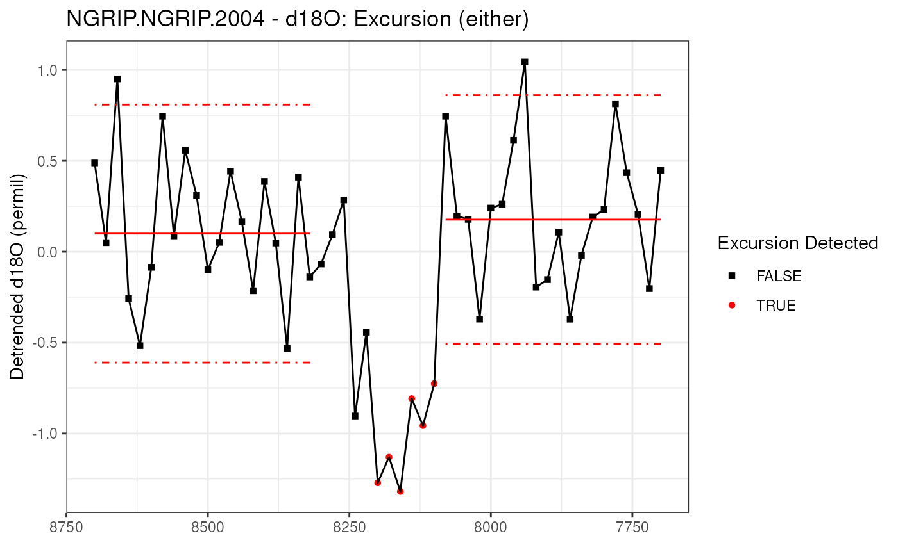
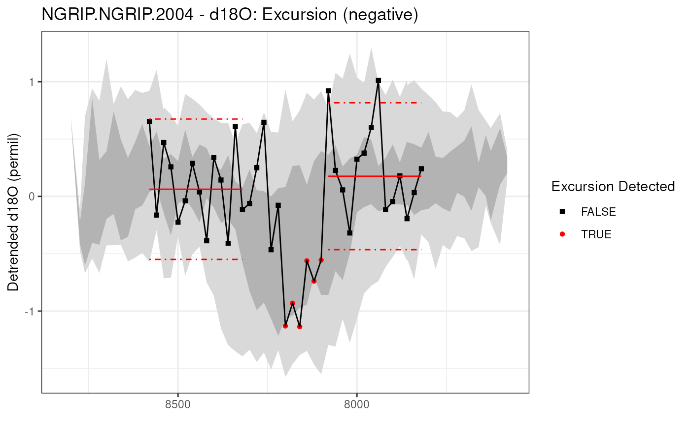
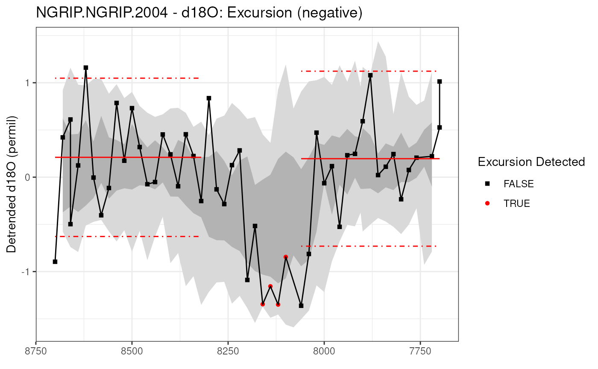

detectExcursion.RmdThis (in development) vignette will showcase a simple example of
detecting an excursion – defined in actR as a short term deviation from
a baseline – using the classic NGRIP d18O record. This dataset comes
preloaded in actR, and you can learn more about it with
?ngrip.
actR uses an excursion detection algorithm developed and used by Morrill et al. (2013).
library(actR)First, let’s take a look at the excursion in the NGRIP d18O dataset
near 8200 yr BP (the 8.2 ka event). First, we’ll tell it not to simulate
any uncertainties. We’re using the detectExcursion()
function, a high-level function for this approach.
We’ll need to give it some key parameters, in this case, we need to define the center and width of the event window (8200 and 200 yr, respectively). We also need to define the reference intervals (400 yrs on each side), and how many standard deviations to use for the baseline (sig.num = 2). We’re only looking for cold (negative excursions).
excOutNoUnc <- detectExcursion(ngrip,
vals.variable.name = "d18O",
event.yr = 8200,
event.window = 200,
ref.window = 400,
sig.num = 2,
exc.type = "either",
n.ens = 1,
null.hypothesis.n = 1,
simulate.time.uncertainty = FALSE,
simulate.paleo.uncertainty = FALSE)
#> Selected d18O
#> Testing null hypothesis with 1 simulations, each with 1 ensemble members.
#> After it runs, the summary() or print()
functions will summarize the results.
summary(excOutNoUnc)
#> NGRIP.NGRIP.2004 - d18O: Excursion test results
#> Searched for positive OR negative excursions in a 200 year window around 8200 BP, with reference windows of 400 years on either side.
#>
#> Overall result: Empirical p-value = 0
#> Time uncertainty considered? FALSE
#> Paleo uncertainty considered? FALSE
#> Error propagation ensemble members = 1
#> Null hypothesis testing ensemble members = 1
#>
#> Parameter choices:
#> sig.num = 2
#> n.consecutive = 2
#> exc.type = either
#> min.vals = 4
#> na.rm = TRUE
#> Here we see the results, but it’s easier to see the results, especially without uncertainties, as a plot:
plot(excOutNoUnc)
Here we see the baselines defined as red lines, with the excursions
and the points that exceed the threshhold as red dots. The method
requires a minimum number of consecutive points to pass the threshold,
the default is 2, this parameters is n.consecutive.
So there’s clearly and excursion centered on 8.2 ka, but how much might this be affected by uncertainty in the y-axis? In this case we’re not really thinking of measurement error, but of the myriad uncertainties that complicate the relationship between d18O and climate (in this case, we’re thinking mostly of cooling). actR propagates these uncertainties as ensembles, and works best if you pass a full ensemble as input. However most datasets don’t have paleo ensembles, so actR will simulate an ensemble based on an uncertainty estimate (0.2) and uncertainty AR1 coefficient (0.8).
Now, because we’re working with ensembles, this will run multiple
times to propagate the error. We specify the number of error propagation
ensemble members in n.ens. To keep this vignette snappy,
we’re only using 50, but you probably want 100 or more.
We’re also going to take advantage of actR’s robust null hypothesis testing, which will repeat the full analysis for synthetic data that mirrors the characteristics of the input data. Check out this (TBD) to learn more about null hypothesis testing in actR. We’ll also run the null hypothesis simulation 50 times.
excOutUncY <- detectExcursion(ngrip,
vals.variable.name = "d18O",
event.yr = 8200,
event.window = 200,
ref.window = 400,
exc.type = "negative",
n.ens = 50,
null.hypothesis.n = 50,
simulate.time.uncertainty = FALSE,
simulate.paleo.uncertainty = TRUE,
paleo.uncertainty = 0.2,
paleo.ar1 = 0.8)
#> Selected d18O
#> Testing null hypothesis with 50 simulations, each with 50 ensemble members.
#>
#> Testing null hypothesis ■■ 2% | ETA: 1m
#> Testing null hypothesis ■■■■ 10% | ETA: 45s
#> Testing null hypothesis ■■■■■■ 16% | ETA: 40s
#> Testing null hypothesis ■■■■■■■■ 22% | ETA: 37s
#> Testing null hypothesis ■■■■■■■■■■ 30% | ETA: 33s
#> Testing null hypothesis ■■■■■■■■■■■■ 36% | ETA: 30s
#> Testing null hypothesis ■■■■■■■■■■■■■■ 42% | ETA: 28s
#> Testing null hypothesis ■■■■■■■■■■■■■■■ 48% | ETA: 24s
#> Testing null hypothesis ■■■■■■■■■■■■■■■■■■ 56% | ETA: 20s
#> Testing null hypothesis ■■■■■■■■■■■■■■■■■■■■ 62% | ETA: 18s
#> Testing null hypothesis ■■■■■■■■■■■■■■■■■■■■■ 68% | ETA: 15s
#> Testing null hypothesis ■■■■■■■■■■■■■■■■■■■■■■■■ 76% | ETA: 11s
#> Testing null hypothesis ■■■■■■■■■■■■■■■■■■■■■■■■■■ 82% | ETA: 8s
#> Testing null hypothesis ■■■■■■■■■■■■■■■■■■■■■■■■■■■ 88% | ETA: 6s
#> Testing null hypothesis ■■■■■■■■■■■■■■■■■■■■■■■■■■■■■■ 96% | ETA: 2sThis time, when we summarize the results, we get more interesting output, including an empirical p-value, which is the fraction of null hypothesis simulations that exceed the positivity rate in the actual data. Typically, empirical p-values less than 0.05 are considered significant.
summary(excOutUncY)
#> NGRIP.NGRIP.2004 - d18O: Excursion test results
#> Searched for negative excursions in a 200 year window around 8200 BP, with reference windows of 400 years on either side.
#>
#> Overall result: Empirical p-value = 0.0612244897959183
#> Time uncertainty considered? FALSE
#> Paleo uncertainty considered? TRUE
#> Error propagation ensemble members = 50
#> Null hypothesis testing ensemble members = 50
#>
#> Parameter choices:
#> sig.num = 2
#> n.consecutive = 2
#> exc.type = negative
#> min.vals = 4
#> na.rm = TRUE
#> We also get a bit more information when plotting with uncertainties. This plotting routine will show the data with uncertainty bands in the back, and a representative ensemble member illustrating the excursion.
plot(excOutUncY) 
Including d18O uncertainty muddies the water a bit, but this feature is still clearly robust to uncertainties in the paleo data. But what about age uncertainty?
In addition to d18O uncertainty, age uncertainty has the potential to obscure abrupt changes in datasets. When we’re testing an excursion to see if it’s robust to age uncertainty, we’re examining the likelihood that, given age uncertainty, the excursion occurred during this specific 200 year window, NOT whether the excursion occurred at all. Age uncertainty is unlikely to destroy an excursion this pronounced, but may be able to move it from 8.2 to 8.5 ka.
Again, actR is designed to work with ensembles, so entering an age
ensemble in to detectExcursion() is ideal. But as is often
the case, this NGRIP dataset doesn’t come with ensembles. In this case,
actR can reasonably simulate age uncertainties (especially for layer
counted records) using BAM (Comboul et al. 2015). Here we’ll use BAM
with a Bernoulli model and symmetric 0.02 over/undercounting rates.
Once again, we’ll run all of this, including the age uncertainties, through our robust null hypothesis testing.
excOutUncXY <- detectExcursion(ngrip,
vals.variable.name = "d18O",
event.yr = 8200,
event.window = 200,
ref.window = 400,
exc.type = "negative",
n.ens = 50,
null.hypothesis.n = 50,
simulate.time.uncertainty = TRUE,
bam.model = list(ns = 50, name = "bernoulli", param = 0.02),
simulate.paleo.uncertainty = TRUE,
paleo.uncertainty = 0.2)
#> Selected d18O
#> Testing null hypothesis with 50 simulations, each with 50 ensemble members.
#>
#> Testing null hypothesis ■■ 4% | ETA: 1m
#> Testing null hypothesis ■■■ 8% | ETA: 1m
#> Testing null hypothesis ■■■■■ 14% | ETA: 1m
#> Testing null hypothesis ■■■■■■ 18% | ETA: 48s
#> Testing null hypothesis ■■■■■■■■ 24% | ETA: 44s
#> Testing null hypothesis ■■■■■■■■■■ 30% | ETA: 40s
#> Testing null hypothesis ■■■■■■■■■■■ 34% | ETA: 38s
#> Testing null hypothesis ■■■■■■■■■■■■■ 40% | ETA: 34s
#> Testing null hypothesis ■■■■■■■■■■■■■■ 44% | ETA: 32s
#> Testing null hypothesis ■■■■■■■■■■■■■■■■ 50% | ETA: 29s
#> Testing null hypothesis ■■■■■■■■■■■■■■■■■■ 56% | ETA: 25s
#> Testing null hypothesis ■■■■■■■■■■■■■■■■■■■ 60% | ETA: 23s
#> Testing null hypothesis ■■■■■■■■■■■■■■■■■■■■■ 66% | ETA: 20s
#> Testing null hypothesis ■■■■■■■■■■■■■■■■■■■■■■■ 72% | ETA: 16s
#> Testing null hypothesis ■■■■■■■■■■■■■■■■■■■■■■■■ 76% | ETA: 14s
#> Testing null hypothesis ■■■■■■■■■■■■■■■■■■■■■■■■■■ 82% | ETA: 10s
#> Testing null hypothesis ■■■■■■■■■■■■■■■■■■■■■■■■■■■ 88% | ETA: 7s
#> Testing null hypothesis ■■■■■■■■■■■■■■■■■■■■■■■■■■■■■ 92% | ETA: 5s
#> Testing null hypothesis ■■■■■■■■■■■■■■■■■■■■■■■■■■■■■■ 98% | ETA: 1sLet’s examine the result.
summary(excOutUncXY)
#> NGRIP.NGRIP.2004 - d18O: Excursion test results
#> Searched for negative excursions in a 200 year window around 8200 BP, with reference windows of 400 years on either side.
#>
#> Overall result: Empirical p-value = 0
#> Time uncertainty considered? TRUE
#> Paleo uncertainty considered? TRUE
#> Error propagation ensemble members = 50
#> Null hypothesis testing ensemble members = 50
#>
#> Parameter choices:
#> sig.num = 2
#> n.consecutive = 2
#> exc.type = negative
#> min.vals = 4
#> na.rm = TRUE
#> And plot the output.
plot(excOutUncXY)
Given these uncertainties, and all of our parametric choices, we rest assured that this excursion is robust to our uncertainties.